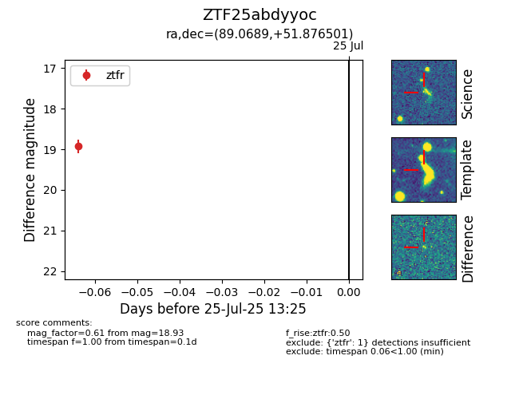

Target ZTF25abdyyoc at 2025-07-25 13:25, see:
FINK: fink-portal.org/ZTF25abdyyoc
Lasair: lasair-ztf.lsst.ac.uk/objects/ZTF25abdyyoc
ALeRCE: alerce.online/object/ZTF25abdyyoc
alt names
ZTF25abdyyoc (ztf,fink)
coordinates:
equatorial (ra, dec) = (89.0689,+51.87650)
galactic (l, b) = (160.9379,+13.16416)
photometry
last ztfr=18.93
1 ztfr detections
